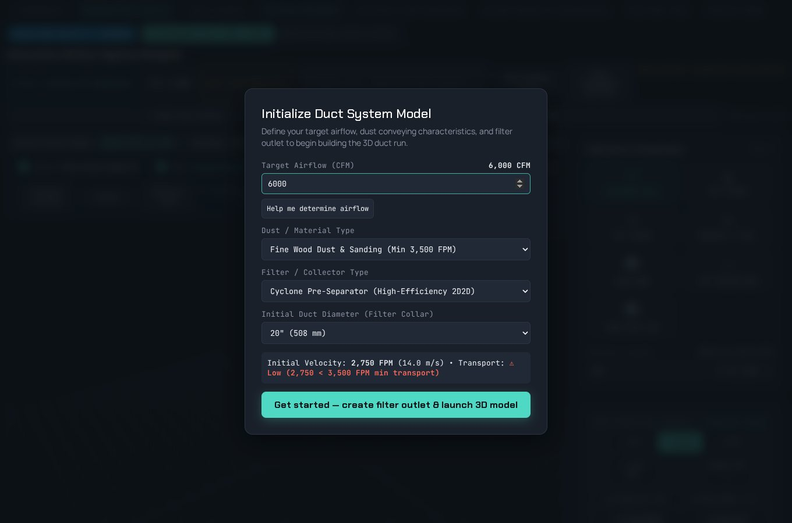

Interactive 3D duct designer
Lay out a dust-collection system in 3D, one fitting at a time, starting from the filter or cyclone outlet. Each duct is sized as it is placed, and the losses carry their source.
What you are looking at
A cyclone collector feeding a duct run that passes through a flap-type isolation valve (red, marked NRV), turns through an elbow and ends at the exhaust fan. The moving dots are the designer's calculated airflow preview, playing in slow motion. It shows bulk flow and how velocity changes through bends and transitions. It is not a CFD or dust-particle simulation, and the app says so. For this view the collector is shaded light gray so it stands out against the dark grid.
The valve and fan come from the designer's built-in component catalog. The valve's pressure loss is looked up from the manufacturer's published table at the run's velocity. The fan's performance table is still pending, so the app leaves its value blank and flags it rather than inventing one.
How an engineer uses it
Start a model by choosing target airflow, dust type and collector, then append straights, elbows with an editable centerline radius, reducers, wyes, valves and fans. The compass sets the next direction, including climbs and drops. Undo and redo cover every edit.
Pickups attach at the hoods. Their airflows add up through a family tree that shows CFM, velocity and velocity pressure for every duct, so an unbalanced branch is visible before anything is built. Layouts save and reload with every branch, wye and pickup intact, and the geometry exports for CFD or 3D printing.
More from this view

Adding a branch: drop in a wye, choose its side and angle, and the panel suggests a branch airflow that keeps dust moving.

Starting a model: target airflow, dust or material type, collector type and outlet diameter. The dialog checks transport velocity before the first duct is placed.